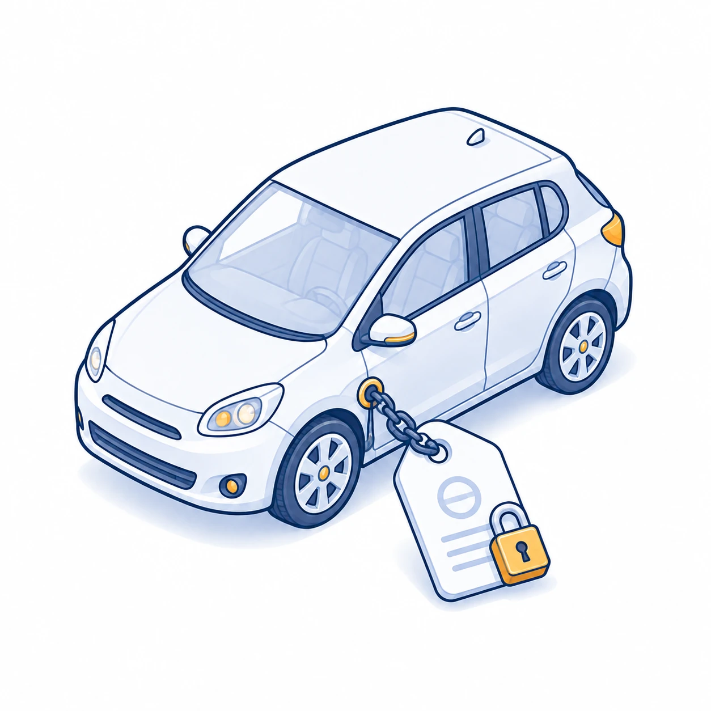

Read the record. Ask the next question.
A little context.
A better conversation.
Understand the records, know their limits and decide what to ask the seller next.
01 02
02
Mileage & service
What a mileage discrepancy can tell you
A conflicting reading is a prompt to investigate, not a conclusion about tampering.
Read the guide02Finance & transfer
Why a lender entry needs a follow-up
A finance entry tells you there is something to verify before transfer.
Read the guide
03Records & inspection
Records and inspection work together
A vehicle’s past and its condition today are related, but different.
Read the guideStart with one car’s paper trail.
See the findings, dated records and follow-up questions together in the VIB sample.